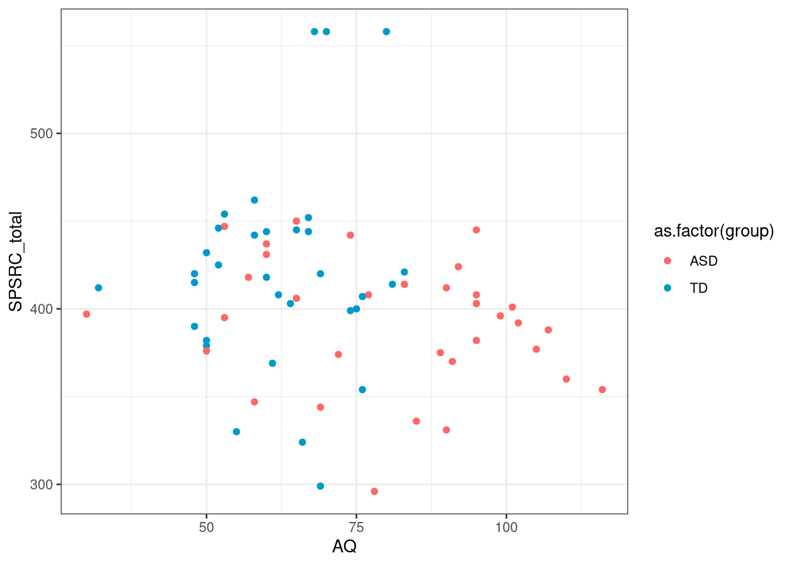
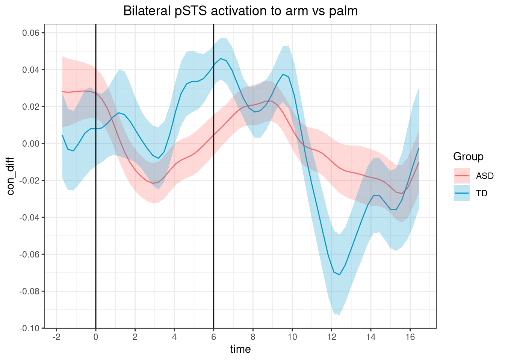
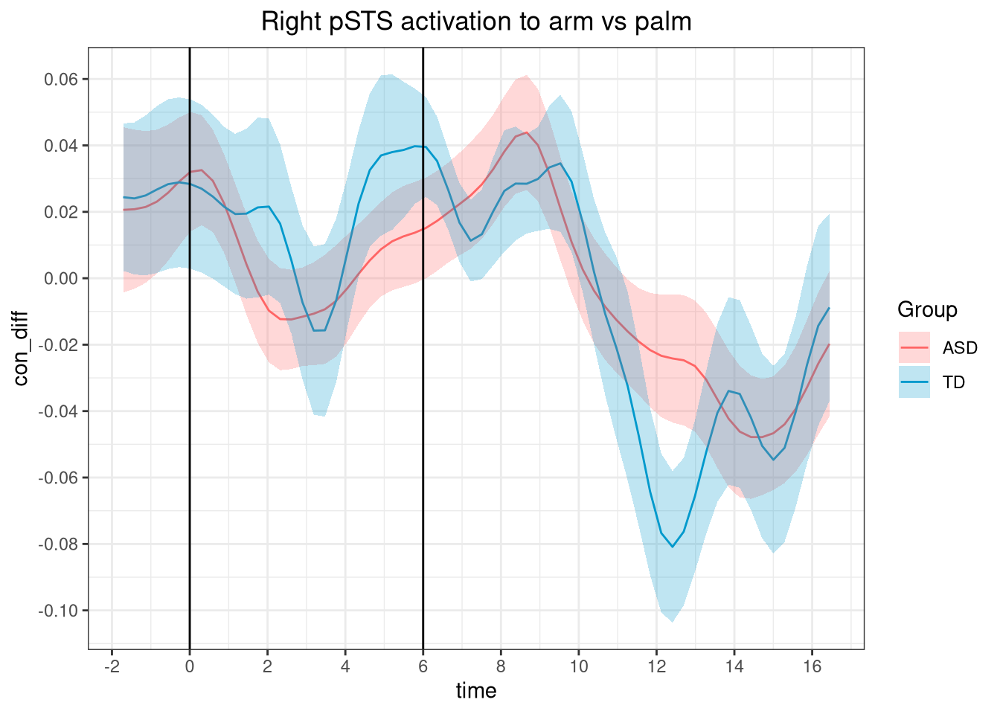
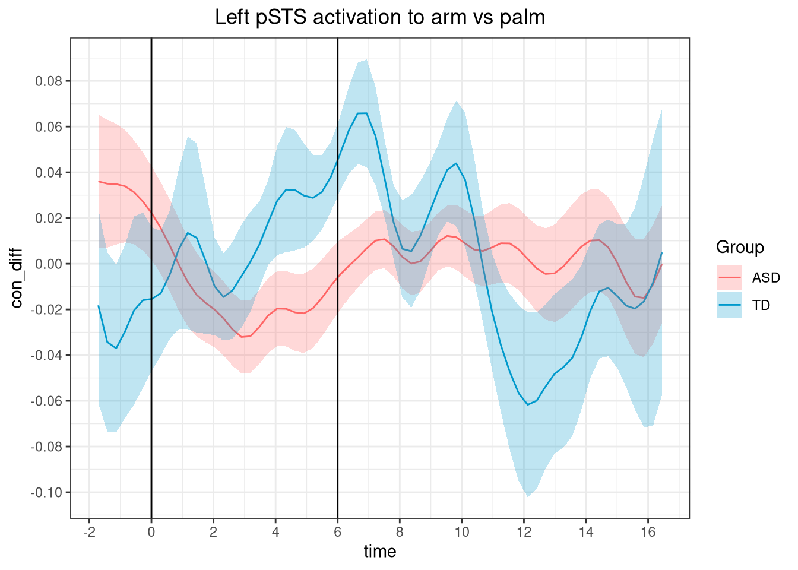
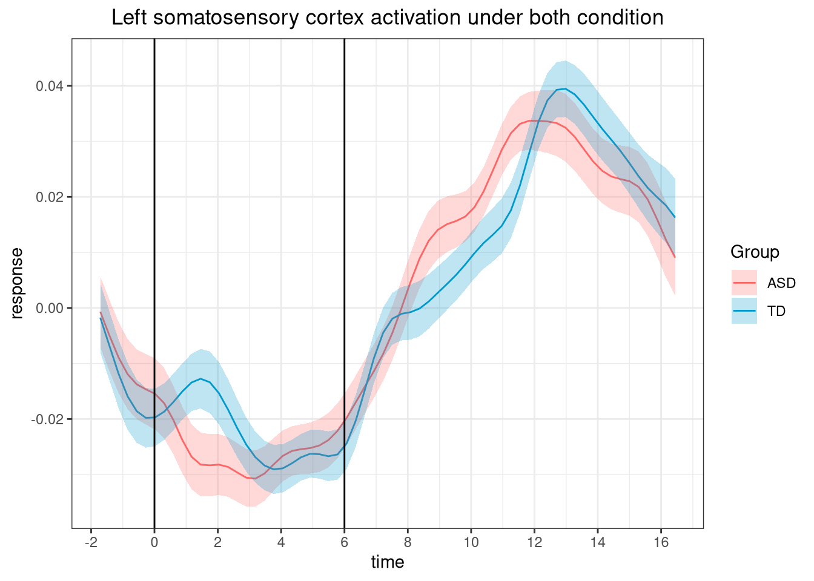
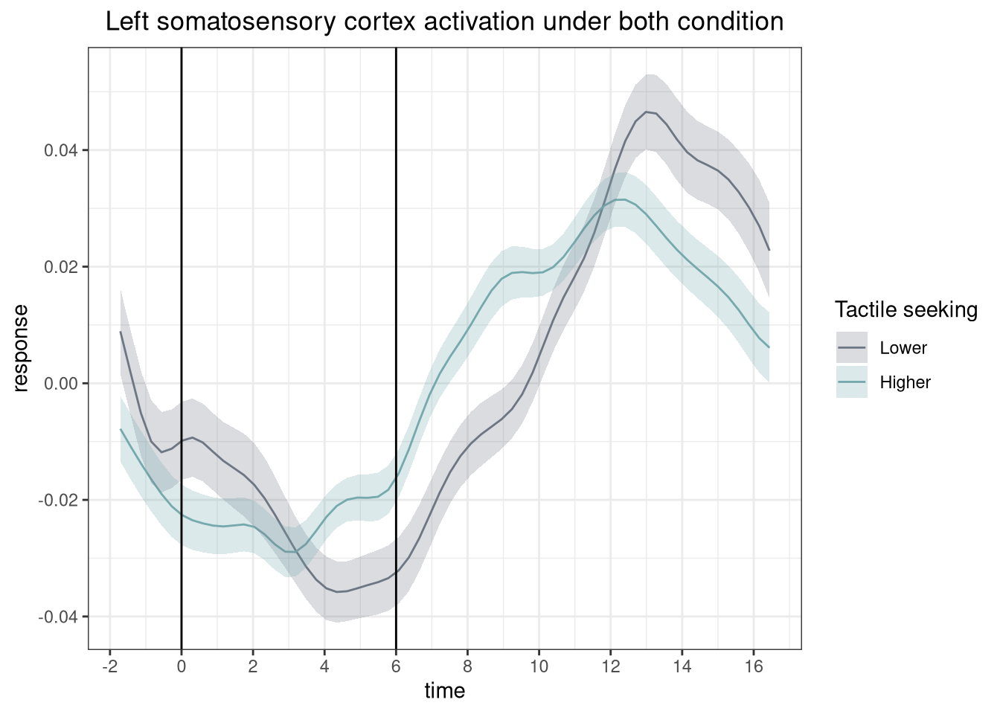

Last updated: 2021-11-25
Checks: 7 0
Knit directory: affective-touch/
This reproducible R Markdown analysis was created with workflowr (version 1.6.2). The Checks tab describes the reproducibility checks that were applied when the results were created. The Past versions tab lists the development history.
Great! Since the R Markdown file has been committed to the Git repository, you know the exact version of the code that produced these results.
Great job! The global environment was empty. Objects defined in the global environment can affect the analysis in your R Markdown file in unknown ways. For reproduciblity it’s best to always run the code in an empty environment.
The command set.seed(20211125) was run prior to running the code in the R Markdown file. Setting a seed ensures that any results that rely on randomness, e.g. subsampling or permutations, are reproducible.
Great job! Recording the operating system, R version, and package versions is critical for reproducibility.
Nice! There were no cached chunks for this analysis, so you can be confident that you successfully produced the results during this run.
Great job! Using relative paths to the files within your workflowr project makes it easier to run your code on other machines.
Great! You are using Git for version control. Tracking code development and connecting the code version to the results is critical for reproducibility.
The results in this page were generated with repository version 600cd76. See the Past versions tab to see a history of the changes made to the R Markdown and HTML files.
Note that you need to be careful to ensure that all relevant files for the analysis have been committed to Git prior to generating the results (you can use wflow_publish or wflow_git_commit). workflowr only checks the R Markdown file, but you know if there are other scripts or data files that it depends on. Below is the status of the Git repository when the results were generated:
Ignored files:
Ignored: .Rhistory
Ignored: .Rproj.user/
Untracked files:
Untracked: output/run_hbr.Rdata
Unstaged changes:
Modified: code/statistical analysis.R
Modified: code/temporal_analysis.R
Modified: output/run_hbo.Rdata
Deleted: wflow/analysis/_site.yml
Deleted: wflow/analysis/about.Rmd
Deleted: wflow/analysis/index.Rmd
Deleted: wflow/analysis/license.Rmd
Deleted: wflow/docs/.nojekyll
Deleted: wflow/docs/about.html
Deleted: wflow/docs/index.html
Deleted: wflow/docs/license.html
Deleted: wflow/docs/site_libs/bootstrap-3.3.5/css/bootstrap-theme.css
Deleted: wflow/docs/site_libs/bootstrap-3.3.5/css/bootstrap-theme.css.map
Deleted: wflow/docs/site_libs/bootstrap-3.3.5/css/bootstrap-theme.min.css
Deleted: wflow/docs/site_libs/bootstrap-3.3.5/css/bootstrap.css
Deleted: wflow/docs/site_libs/bootstrap-3.3.5/css/bootstrap.css.map
Deleted: wflow/docs/site_libs/bootstrap-3.3.5/css/bootstrap.min.css
Deleted: wflow/docs/site_libs/bootstrap-3.3.5/css/cerulean.min.css
Deleted: wflow/docs/site_libs/bootstrap-3.3.5/css/cosmo.min.css
Deleted: wflow/docs/site_libs/bootstrap-3.3.5/css/darkly.min.css
Deleted: wflow/docs/site_libs/bootstrap-3.3.5/css/flatly.min.css
Deleted: wflow/docs/site_libs/bootstrap-3.3.5/css/fonts/Lato.ttf
Deleted: wflow/docs/site_libs/bootstrap-3.3.5/css/fonts/LatoBold.ttf
Deleted: wflow/docs/site_libs/bootstrap-3.3.5/css/fonts/LatoItalic.ttf
Deleted: wflow/docs/site_libs/bootstrap-3.3.5/css/fonts/NewsCycle.ttf
Deleted: wflow/docs/site_libs/bootstrap-3.3.5/css/fonts/NewsCycleBold.ttf
Deleted: wflow/docs/site_libs/bootstrap-3.3.5/css/fonts/OpenSans.ttf
Deleted: wflow/docs/site_libs/bootstrap-3.3.5/css/fonts/OpenSansBold.ttf
Deleted: wflow/docs/site_libs/bootstrap-3.3.5/css/fonts/OpenSansBoldItalic.ttf
Deleted: wflow/docs/site_libs/bootstrap-3.3.5/css/fonts/OpenSansItalic.ttf
Deleted: wflow/docs/site_libs/bootstrap-3.3.5/css/fonts/OpenSansLight.ttf
Deleted: wflow/docs/site_libs/bootstrap-3.3.5/css/fonts/OpenSansLightItalic.ttf
Deleted: wflow/docs/site_libs/bootstrap-3.3.5/css/fonts/Raleway.ttf
Deleted: wflow/docs/site_libs/bootstrap-3.3.5/css/fonts/RalewayBold.ttf
Deleted: wflow/docs/site_libs/bootstrap-3.3.5/css/fonts/Roboto.ttf
Deleted: wflow/docs/site_libs/bootstrap-3.3.5/css/fonts/RobotoBold.ttf
Deleted: wflow/docs/site_libs/bootstrap-3.3.5/css/fonts/RobotoLight.ttf
Deleted: wflow/docs/site_libs/bootstrap-3.3.5/css/fonts/RobotoMedium.ttf
Deleted: wflow/docs/site_libs/bootstrap-3.3.5/css/fonts/SourceSansPro.ttf
Deleted: wflow/docs/site_libs/bootstrap-3.3.5/css/fonts/SourceSansProBold.ttf
Deleted: wflow/docs/site_libs/bootstrap-3.3.5/css/fonts/SourceSansProItalic.ttf
Deleted: wflow/docs/site_libs/bootstrap-3.3.5/css/fonts/SourceSansProLight.ttf
Deleted: wflow/docs/site_libs/bootstrap-3.3.5/css/fonts/Ubuntu.ttf
Deleted: wflow/docs/site_libs/bootstrap-3.3.5/css/journal.min.css
Deleted: wflow/docs/site_libs/bootstrap-3.3.5/css/lumen.min.css
Deleted: wflow/docs/site_libs/bootstrap-3.3.5/css/paper.min.css
Deleted: wflow/docs/site_libs/bootstrap-3.3.5/css/readable.min.css
Deleted: wflow/docs/site_libs/bootstrap-3.3.5/css/sandstone.min.css
Deleted: wflow/docs/site_libs/bootstrap-3.3.5/css/simplex.min.css
Deleted: wflow/docs/site_libs/bootstrap-3.3.5/css/spacelab.min.css
Deleted: wflow/docs/site_libs/bootstrap-3.3.5/css/united.min.css
Deleted: wflow/docs/site_libs/bootstrap-3.3.5/css/yeti.min.css
Deleted: wflow/docs/site_libs/bootstrap-3.3.5/fonts/glyphicons-halflings-regular.eot
Deleted: wflow/docs/site_libs/bootstrap-3.3.5/fonts/glyphicons-halflings-regular.svg
Deleted: wflow/docs/site_libs/bootstrap-3.3.5/fonts/glyphicons-halflings-regular.ttf
Deleted: wflow/docs/site_libs/bootstrap-3.3.5/fonts/glyphicons-halflings-regular.woff
Deleted: wflow/docs/site_libs/bootstrap-3.3.5/fonts/glyphicons-halflings-regular.woff2
Deleted: wflow/docs/site_libs/bootstrap-3.3.5/js/bootstrap.js
Deleted: wflow/docs/site_libs/bootstrap-3.3.5/js/bootstrap.min.js
Deleted: wflow/docs/site_libs/bootstrap-3.3.5/js/npm.js
Deleted: wflow/docs/site_libs/bootstrap-3.3.5/shim/html5shiv.min.js
Deleted: wflow/docs/site_libs/bootstrap-3.3.5/shim/respond.min.js
Deleted: wflow/docs/site_libs/font-awesome-5.1.0/css/all.css
Deleted: wflow/docs/site_libs/font-awesome-5.1.0/css/v4-shims.css
Deleted: wflow/docs/site_libs/font-awesome-5.1.0/webfonts/fa-brands-400.eot
Deleted: wflow/docs/site_libs/font-awesome-5.1.0/webfonts/fa-brands-400.svg
Deleted: wflow/docs/site_libs/font-awesome-5.1.0/webfonts/fa-brands-400.ttf
Deleted: wflow/docs/site_libs/font-awesome-5.1.0/webfonts/fa-brands-400.woff
Deleted: wflow/docs/site_libs/font-awesome-5.1.0/webfonts/fa-brands-400.woff2
Deleted: wflow/docs/site_libs/font-awesome-5.1.0/webfonts/fa-regular-400.eot
Deleted: wflow/docs/site_libs/font-awesome-5.1.0/webfonts/fa-regular-400.svg
Deleted: wflow/docs/site_libs/font-awesome-5.1.0/webfonts/fa-regular-400.ttf
Deleted: wflow/docs/site_libs/font-awesome-5.1.0/webfonts/fa-regular-400.woff
Deleted: wflow/docs/site_libs/font-awesome-5.1.0/webfonts/fa-regular-400.woff2
Deleted: wflow/docs/site_libs/font-awesome-5.1.0/webfonts/fa-solid-900.eot
Deleted: wflow/docs/site_libs/font-awesome-5.1.0/webfonts/fa-solid-900.svg
Deleted: wflow/docs/site_libs/font-awesome-5.1.0/webfonts/fa-solid-900.ttf
Deleted: wflow/docs/site_libs/font-awesome-5.1.0/webfonts/fa-solid-900.woff
Deleted: wflow/docs/site_libs/font-awesome-5.1.0/webfonts/fa-solid-900.woff2
Deleted: wflow/docs/site_libs/header-attrs-2.11/header-attrs.js
Deleted: wflow/docs/site_libs/highlightjs-9.12.0/default.css
Deleted: wflow/docs/site_libs/highlightjs-9.12.0/highlight.js
Deleted: wflow/docs/site_libs/highlightjs-9.12.0/textmate.css
Deleted: wflow/docs/site_libs/jquery-3.6.0/jquery-3.6.0.js
Deleted: wflow/docs/site_libs/jquery-3.6.0/jquery-3.6.0.min.js
Deleted: wflow/docs/site_libs/jquery-3.6.0/jquery-3.6.0.min.map
Deleted: wflow/docs/site_libs/navigation-1.1/codefolding.js
Deleted: wflow/docs/site_libs/navigation-1.1/sourceembed.js
Deleted: wflow/docs/site_libs/navigation-1.1/tabsets.js
Note that any generated files, e.g. HTML, png, CSS, etc., are not included in this status report because it is ok for generated content to have uncommitted changes.
These are the previous versions of the repository in which changes were made to the R Markdown (analysis/temporal-analysis.Rmd) and HTML (docs/temporal-analysis.html) files. If you’ve configured a remote Git repository (see ?wflow_git_remote), click on the hyperlinks in the table below to view the files as they were in that past version.
| File | Version | Author | Date | Message |
|---|---|---|---|---|
| Rmd | 600cd76 | niwei@ccl | 2021-11-25 | wflow_publish("analysis/temporal-analysis.Rmd") |
| html | 76713e5 | niwei@ccl | 2021-11-25 | Build site. |
| Rmd | 7b4f36f | niwei@ccl | 2021-11-25 | wflow_publish("analysis/temporal-analysis.Rmd") |
Analysis of hbo and hbr data.

Welch Two Sample t-test
data: q_iq_sub$age[which(q_iq_sub$group == 1)] and q_iq_sub$age[which(q_iq_sub$group == 2)]
t = -1.8332, df = 55.704, p-value = 0.07212
alternative hypothesis: true difference in means is not equal to 0
95 percent confidence interval:
-0.65759334 0.02918321
sample estimates:
mean of x mean of y
5.683313 5.997518
Welch Two Sample t-test
data: q_iq_sub$FSIQ[which(q_iq_sub$group == 1)] and q_iq_sub$FSIQ[which(q_iq_sub$group == 2)]
t = -1.0966, df = 63.584, p-value = 0.2769
alternative hypothesis: true difference in means is not equal to 0
95 percent confidence interval:
-9.235381 2.689927
sample estimates:
mean of x mean of y
117.7576 121.0303
Welch Two Sample t-test
data: q_iq_sub$SRS[which(q_iq_sub$group == 1)] and q_iq_sub$SRS[which(q_iq_sub$group == 2)]
t = 8.0075, df = 61.743, p-value = 3.946e-11
alternative hypothesis: true difference in means is not equal to 0
95 percent confidence interval:
26.41045 43.98538
sample estimates:
mean of x mean of y
74.66667 39.46875
Welch Two Sample t-test
data: q_iq_sub$AQ[which(q_iq_sub$group == 1)] and q_iq_sub$AQ[which(q_iq_sub$group == 2)]
t = 4.4995, df = 50.676, p-value = 4.001e-05
alternative hypothesis: true difference in means is not equal to 0
95 percent confidence interval:
10.30321 26.90891
sample estimates:
mean of x mean of y
80.63636 62.03030
Welch Two Sample t-test
data: q_iq_sub$SPSRC_total[which(q_iq_sub$group == 1)] and q_iq_sub$SPSRC_total[which(q_iq_sub$group == 2)]
t = -2.3942, df = 54.025, p-value = 0.02016
alternative hypothesis: true difference in means is not equal to 0
95 percent confidence interval:
-52.782761 -4.671784
sample estimates:
mean of x mean of y
392.0000 420.7273
Welch Two Sample t-test
data: q_iq_sub$tactile[which(q_iq_sub$group == 1)] and q_iq_sub$tactile[which(q_iq_sub$group == 2)]
t = -3.1609, df = 57.751, p-value = 0.002505
alternative hypothesis: true difference in means is not equal to 0
95 percent confidence interval:
-12.423263 -2.788858
sample estimates:
mean of x mean of y
82.36364 89.96970
Welch Two Sample t-test
data: q_iq_sub$forearm[which(q_iq_sub$group == 1)] and q_iq_sub$forearm[which(q_iq_sub$group == 2)]
t = -2.9454, df = 45.826, p-value = 0.005054
alternative hypothesis: true difference in means is not equal to 0
95 percent confidence interval:
-0.9102889 -0.1711505
sample estimates:
mean of x mean of y
1.15625 1.69697
Welch Two Sample t-test
data: q_iq_sub$hand[which(q_iq_sub$group == 1)] and q_iq_sub$hand[which(q_iq_sub$group == 2)]
t = -1.3556, df = 59.828, p-value = 0.1803
alternative hypothesis: true difference in means is not equal to 0
95 percent confidence interval:
-0.7994332 0.1535999
sample estimates:
mean of x mean of y
1.343750 1.666667
Pearson's product-moment correlation
data: q_iq_sub$AQ and q_iq_sub$SPSRC_total
t = -1.4305, df = 64, p-value = 0.1574
alternative hypothesis: true correlation is not equal to 0
95 percent confidence interval:
-0.40097452 0.06894533
sample estimates:
cor
-0.1760248 




sessionInfo()R version 4.1.1 (2021-08-10)
Platform: x86_64-pc-linux-gnu (64-bit)
Running under: Manjaro Linux
Matrix products: default
BLAS: /usr/lib/libopenblasp-r0.3.18.so
LAPACK: /usr/lib/liblapack.so.3.10.0
locale:
[1] LC_CTYPE=zh_CN.UTF-8 LC_NUMERIC=C
[3] LC_TIME=zh_CN.UTF-8 LC_COLLATE=zh_CN.UTF-8
[5] LC_MONETARY=zh_CN.UTF-8 LC_MESSAGES=zh_CN.UTF-8
[7] LC_PAPER=zh_CN.UTF-8 LC_NAME=C
[9] LC_ADDRESS=C LC_TELEPHONE=C
[11] LC_MEASUREMENT=zh_CN.UTF-8 LC_IDENTIFICATION=C
attached base packages:
[1] stats graphics grDevices utils datasets methods base
other attached packages:
[1] readxl_1.3.1 data.table_1.14.2 forcats_0.5.1 stringr_1.4.0
[5] dplyr_1.0.7 purrr_0.3.4 readr_2.1.0 tidyr_1.1.4
[9] tibble_3.1.6 ggplot2_3.3.5 tidyverse_1.3.1 workflowr_1.6.2
loaded via a namespace (and not attached):
[1] Rcpp_1.0.7 lattice_0.20-44 lubridate_1.8.0 assertthat_0.2.1
[5] rprojroot_2.0.2 digest_0.6.28 utf8_1.2.2 plyr_1.8.6
[9] R6_2.5.1 cellranger_1.1.0 backports_1.3.0 reprex_2.0.1
[13] evaluate_0.14 highr_0.9 httr_1.4.2 pillar_1.6.4
[17] Rmisc_1.5 rlang_0.4.12 rstudioapi_0.13 whisker_0.4
[21] jquerylib_0.1.4 rmarkdown_2.11 labeling_0.4.2 munsell_0.5.0
[25] broom_0.7.10 compiler_4.1.1 httpuv_1.6.3 modelr_0.1.8
[29] xfun_0.28 pkgconfig_2.0.3 htmltools_0.5.2 tidyselect_1.1.1
[33] fansi_0.5.0 crayon_1.4.2 tzdb_0.2.0 dbplyr_2.1.1
[37] withr_2.4.2 later_1.3.0 grid_4.1.1 jsonlite_1.7.2
[41] gtable_0.3.0 lifecycle_1.0.1 DBI_1.1.1 git2r_0.29.0
[45] magrittr_2.0.1 scales_1.1.1 cli_3.1.0 stringi_1.7.5
[49] farver_2.1.0 fs_1.5.0 promises_1.2.0.1 xml2_1.3.2
[53] ellipsis_0.3.2 generics_0.1.1 vctrs_0.3.8 tools_4.1.1
[57] glue_1.5.0 hms_1.1.1 fastmap_1.1.0 yaml_2.2.1
[61] colorspace_2.0-2 rvest_1.0.2 knitr_1.36 haven_2.4.3